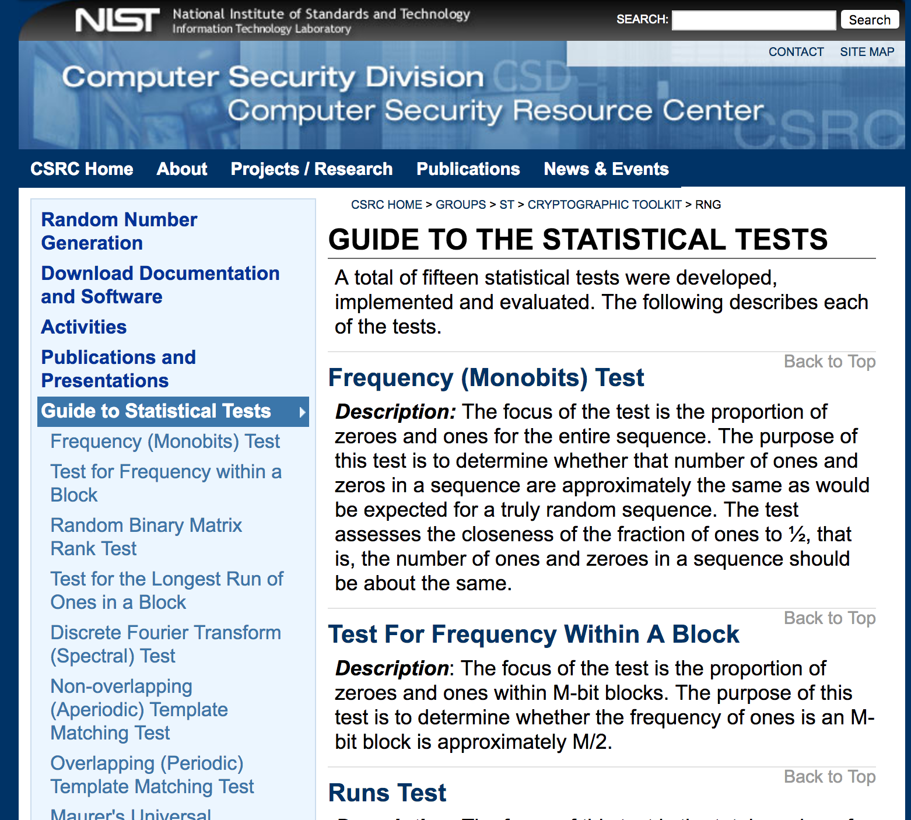

Pseudo-random number generators and random sampling¶
Properties of PRNGs¶
dimension of output
commonly 32 bits, but some have more
number of states
dimension of state space in bits
sometimes state = output, but better generators generally have output = f(state)
period
maximum over initial states of the number of states visited before repeating
period ≤ number of states
if state has \(s\) bits, period \(\le 2^s\)
for some PRNGs, period is much less than number of states
for some seeds for some PRNGs, number of states visited is much less than period
\(k\)-distribution
suppose \(\{X_i\}\) is sequence of \(P\) \(w\)-bit integers
define \(t_v(X_i)\) to be the first \(v\) bits of \(X_i\)
\(\{X_i\}\) is \(k\)-distributed to \(v\)-bit accuracy if each of the \(2^{kv}-1\) possible nonzero \(kv\)-bit vectors occurs equally often among the \(P\) \(kv\)-bit vectors
and the zero vector occurs once less often. - amounts to a form of uniformity in \(k\)-dimensional space, over an entire cycle - does not measure dependence or other “serial” properties
sensitivity to initial state; burn-in
many PRNGs don’t do well if the seed has too many zeros
some require many iterations before output behaves well
for some seeds, some PRNGs repeat very quickly
Some PRNGs¶
Middle Square¶
Dates to Franciscan friar ca. 1240 (per Wikipedia); reinvented by von Neumann ca. 1949.
Take \(n\)-digit number, square it, use middle \(n\) digits as the “random” and the new seed.
E.g., for \(n=4\), take \(X_0 = 1234\).
\(1234^2 = 1522756\), so \(X_1 = 2275\).
\(2275^2 = 5175625\), so \(X_2 = 7562\).
\(10^n\) possible states, but not all attainable from a given seed
period at most \(8^n\), but can be very short. E.g., for \(n=4\),
0000, 0100, 2500, 3792, & 7600 repeat forever
0540 → 2916 → 5030 → 3009 → 0540
Linear Congruential Generators (LCGs)¶
LCG period is at most \(m\).
Hull-Dobell Theorem: the period of an LCG is \(m\) for all seeds \(X_0\) iff¶
\(m\) and \(c\) are relatively prime
\(a-1\) is divisible by all prime factors of \(m\)
\(a-1\) is divisible by 4 if \(m\) is divisible by 4
Marsaglia (PNAS, 1968): Random Numbers Fall Mainly in the Planes¶
Multiplicative congruential generators (\(c=0\)), Lehmer (1949).
RANDU¶
RANDU is a particularly bad linear congruential generator promulgated in the 1960s and widely copied.
RANDU is given by the recursion
Period is (\(2^{29}\)); all outputs are odd integers.
Triples of values from RANDU fall on 15 planes in 3-dimensional space, as shown below.
%matplotlib inline
import math
import numpy as np
import scipy as sp
from scipy.special import comb, factorial
from scipy.optimize import brentq
from scipy.stats import chisquare, norm
import scipy.integrate
from random import Random
import matplotlib.pyplot as plt
from mpl_toolkits.mplot3d import Axes3D
# LCG; defaults to RANDU, a particularly bad choice
class lcgRandom: # defaults to RANDU: BEWARE!
def __init__(self, seed=1234567890, A=0, B=65539, M = 2**31):
self.state = seed
self.A = A
self.B = B
self.M = M
def getState(self):
return self.state, self.A, self.B, self.M
def setState(self,seed=1234567890, A=0, B=65539, M = 2**31):
self.state = seed
self.A = A
self.B = B
self.M = M
def nextRandom(self):
self.state = (self.A + self.B * self.state) % self.M
return self.state/self.M
def random(self, size=None): # vector of rands
if size==None:
return self.nextRandom()
else:
return np.reshape(np.array([self.nextRandom() for i in np.arange(np.prod(size))]), size)
def randint(self, low=0, high=None, size=None): # integer between low (inclusive) and high (exclusive)
if high==None: # numpy.random.randint()-like behavior
high, low = low, 0
if size==None:
return low + np.floor(self.nextRandom()*(high-low)) # NOT AN ACCURATE ALGORITHM! See below.
else:
return low + np.floor(self.random(size=size)*(high-low))
# generate triples using RANDU
reps = int(10**5)
randu = lcgRandom(12345)
xs = np.transpose(randu.random(size=(reps,3)))
# plot the triples as points in R^3
fig = plt.figure()
ax = fig.add_subplot(111, projection='3d')
ax.scatter(xs[0],xs[1], xs[2])
plt.rcParams['figure.figsize'] = (18.0, 18.0)
ax.view_init(-100,110)
plt.show()
Wichmann-Hill (1982)¶
Sum of 3 LCGs. Period is 6,953,607,871,644.
def WH(s1, s2, s3):
s1 = (171 * s1) % 30269
s2 = (172 * s2) % 30307
s3 = (170 * s3) % 30323
r = (s1/30269 + s2/30307 + s3/30323) % 1
return [r, s1, s2, s3]
The right way, the wrong way, and the Microsoft way.¶
WH generally not considered adequate for statistics, but was (nominally) the PRNG in Excel for several generations. Excel did not allow the seed to be set, so analyses were not reproducible.
McCullough, B.D., 2008. Microsoft Excel’s ‘Not The Wichmann–Hill’ random number generators Computational Statistics & Data Analysis, 52, 4587–4593 doi:10.1016/j.csda.2008.03.006
Mersenne Twister (MT) Matsumoto & Nishimura (1997)¶
example of “twisted generalized feedback shift register”
period \(2^{19937}-1\), a Mersenne Prime
\(k\)-distributed to 32-bit accuracy for all \(k \in \{1, \ldots, 623\}\).
passes DIEHARD and most of TestU01 (see below)
standard in many packages:
GNU Octave, Maple, MATLAB, Mathematica, Python, R, Stata
Apache, CMU Common Lisp, Embeddable Common Lisp, Free Pascal, GLib, PHP, GAUSS, IDL, Julia, Ruby, SageMath, Steel Bank Common Lisp, Scilab, Stata, GNU Scientific Library, GNU Multiple Precision Arithmetic Library, Microsoft Visual C++.
SPSS and SAS offer MT, as does C++ (v11 and up)
generally considered adequate for statistics (but not for cryptography); however, will trouble that in this work, esp. for “big data”
usual implementation has 624-dimensional state space, but TinyMT uses only 127 bits
seeding complicated, since state is an array
can take a while to “burn in,” especially for seeds with many zeros
output for close seed states can be close
2002 update improves seeding
completely predictable from 624 successive outputs
problems discovered in 2007 (see TestU01, below)
# Python implementation of MT19937 from Wikipedia
# https://en.wikipedia.org/wiki/Mersenne_Twister#Python_implementation
def _int32(x):
# Get the 32 least significant bits.
return int(0xFFFFFFFF & x)
class MT19937:
def __init__(self, seed):
# Initialize the index to 0
self.index = 624
self.mt = [0] * 624
self.mt[0] = seed # Initialize the initial state to the seed
for i in range(1, 624):
self.mt[i] = _int32(
1812433253 * (self.mt[i - 1] ^ self.mt[i - 1] >> 30) + i)
def extract_number(self):
if self.index >= 624:
self.twist()
y = self.mt[self.index]
# Right shift by 11 bits
y = y ^ y >> 11
# Shift y left by 7 and take the bitwise and of 2636928640
y = y ^ y << 7 & 2636928640
# Shift y left by 15 and take the bitwise and of y and 4022730752
y = y ^ y << 15 & 4022730752
# Right shift by 18 bits
y = y ^ y >> 18
self.index = self.index + 1
return _int32(y)
def twist(self):
for i in range(624):
# Get the most significant bit and add it to the less significant
# bits of the next number
y = _int32((self.mt[i] & 0x80000000) +
(self.mt[(i + 1) % 624] & 0x7fffffff))
self.mt[i] = self.mt[(i + 397) % 624] ^ y >> 1
if y % 2 != 0:
self.mt[i] = self.mt[i] ^ 0x9908b0df
self.index = 0
xorshift family¶
Originated by Marsaglia, 2003.
Vigna, S., 2014. Further scramblings of Marsaglia’s xorshift generators. https://arxiv.org/abs/1404.0390
128-bit xorshift+ Implemented in Python package randomstate https://pypi.python.org/pypi/randomstate/1.10.1
uint64_t s[2];
uint64_t xorshift128plus(void) {
uint64_t x = s[0];
uint64_t const y = s[1];
s[0] = y;
x ^= x << 23; // a
s[1] = x ^ y ^ (x >> 17) ^ (y >> 26); // b, c
return s[1] + y;
}
1024-bit xorshift+
uint64_t s[16];
int p;
uint64_t next(void) {
const uint64_t s0 = s[p];
uint64_t s1 = s[p = (p + 1) & 15];
const uint64_t result = s0 + s1;
s1 ^= s1 << 31; // a
s[p] = s1 ^ s0 ^ (s1 >> 11) ^ (s0 >> 30); // b, c
return result;
}
xorshift+ passes all the tests in BigCrush, has 128-bit state space and period \(2^{128}-1\), but is only \((k-1)\)-dimensionally equidistributed, where \(k\) is the dimension of the distribution of the xorshift generator from which it’s derived. E.g., for the 128-bit version, xorshift+ is only 1-dimensionally equidistributed.
Other non-cryptographic PRNGs¶
See http://www.pcg-random.org/ and the talk http://www.pcg-random.org/posts/stanford-colloquium-talk.html
PCG family permutes the output of a LCG; good statistical properties and very fast and compact. Related to Rivest’s RC5 cipher.
Seems better than MT, xorshift+, et al.
// *Really* minimal PCG32 code / (c) 2014 M.E. O'Neill / pcg-random.org
// Licensed under Apache License 2.0 (NO WARRANTY, etc. see website)
typedef struct { uint64_t state; uint64_t inc; } pcg32_random_t;
uint32_t pcg32_random_r(pcg32_random_t* rng)
{
uint64_t oldstate = rng->state;
// Advance internal state
rng->state = oldstate * 6364136223846793005ULL + (rng->inc|1);
// Calculate output function (XSH RR), uses old state for max ILP
uint32_t xorshifted = ((oldstate >> 18u) ^ oldstate) >> 27u;
uint32_t rot = oldstate >> 59u;
return (xorshifted >> rot) | (xorshifted << ((-rot) & 31));
}
PRNGs based on cryptographic hash functions¶
Cryptographic hash functions have several basic properties:
produce fixed-length “digest” of an arbitrarily long “message”: \(H:\{0, 1\}^* \rightarrow \{0, 1\}^L\).
inexpensive to compute
non-invertible (“one-way,” hard to find pre-image of any hash except by exhaustive enumeration)
collision-resistant (hard to find \(M_1 \ne M_2\) such that \(H(M_1) = H(M_2)\))
small change to input produces big change to output (“unpredictable,” input and output effectively independent)
equidistributed: bits of the hash are essentially random
Summary: as if \(H(M)\) is random \(L\)-bit string is assigned to \(M\) in a way that’s essentially unique.
1 step of SHA-256¶
By User:kockmeyer - Own work, CC BY-SA 3.0, https://commons.wikimedia.org/w/index.php?curid=1823488
Simple, hash-based PRNG¶
Generate a random string \(S\) of reasonable length, e.g., 20 digits.
where \(+\) denotes string concatenation, and the resulting string is interpreted as a (long) hexadecimal number.
“Counter mode.” Hash-based generators of this type have unbounded state spaces.
Implementation in Python by Ron Rivest: http://people.csail.mit.edu/rivest/sampler.py
Implementation in angular-js by Chris Jerdonek: https://github.com/cjerdonek/quick-sampler
Implementation in JavaScript by Philip Stark: https://www.stat.berkeley.edu/~stark/Java/Html/sha256Rand.htm
Variation to take advantage of incremental hashing¶
where \(+\) denotes string concatenation and \(0*i\) denotes a string of \(i\) zeros.
This is the method used in the cryptorandom python package.
Some trainwrecks¶
Microsoft Visual Studio system.random, 2011¶
https://connect.microsoft.com/VisualStudio/feedback/details/634761/system-random-serious-bug
{kind=link}
{kind=link}
Dual Elliptic Curve¶
 Bernstein, D.J., T. Lange, and R. Niederhagen, 2016. Dual EC: A Standardized Backdoor, in The New Codebreakers, Essays Dedicated to David Kahn on the Occasion of his 85th Birthday, Ryan, P.Y.A., D. Naccache, and J-J Quisquater, eds., Springer, Berlin.
Bernstein, D.J., T. Lange, and R. Niederhagen, 2016. Dual EC: A Standardized Backdoor, in The New Codebreakers, Essays Dedicated to David Kahn on the Occasion of his 85th Birthday, Ryan, P.Y.A., D. Naccache, and J-J Quisquater, eds., Springer, Berlin.
GnuPG RNG bug (18 years, 1998–2016)¶
“An attacker who obtains 4640 bits from the RNG can trivially predict the next 160 bits of output”
https://threatpost.com/gpg-patches-18-year-old-libgcrypt-rng-bug/119984/
RSA¶
https://www.schneier.com/blog/archives/2012/02/lousy_random_nu.html
“An analysis comparing millions of RSA public keys gathered from the Internet was announced in 2012 by Lenstra, Hughes, Augier, Bos, Kleinjung, and Wachter. They were able to factor 0.2% of the keys using only Euclid’s algorithm. They exploited a weakness unique to cryptosystems based on integer factorization. If n = pq is one public key and n′ = p′q′ is another, then if by chance p = p′, then a simple computation of gcd(n,n′) = p factors both n and n′, totally compromising both keys. Nadia Heninger, part of a group that did a similar experiment, said that the bad keys occurred almost entirely in embedded applications, and explains that the one-shared-prime problem uncovered by the two groups results from situations where the pseudorandom number generator is poorly seeded initially and then reseeded between the generation of the first and second primes.”
PHP¶
Bitcoin on Android: Java nonce collision¶
“In August 2013, it was revealed that bugs in the Java class SecureRandom could generate collisions in the k nonce values used for ECDSA in implementations of Bitcoin on Android. When this occurred the private key could be recovered, in turn allowing stealing Bitcoins from the containing wallet.”
https://en.wikipedia.org/wiki/Random_number_generator_attack#Java_nonce_collision
Debian OpenSSL¶
Valgrind and Purify warned about uninitialized data. Only remaining entropy in seed was the process ID.
Default maximum process ID is 32,768 in Linux.
Took 2 years (2006–2008) to notice the bug.
XKCD

Generating a random integer uniformly distributed on \(\{1, \ldots, m\}\)¶
Naive method¶
A standard way to generate a random integer is to start with \(X \sim U[0,1)\) and define \(Y \equiv 1 + \lfloor mX \rfloor\).
In theory, that’s fine. But in practice, \(X\) is not really \(U[0,1)\) but instead is derived by normalizing a PRN that’s uniform on \(w\)-bit integers. Then, unless \(m\) is a power of 2, the distribution of \(Y\) isn’t uniform on \(\{1, \ldots, m\}\). For \(m < 2^w\), the ratio of the largest to smallest selection probability is, to first order, \(1+ m 2^{-w}\). (See, e.g., Knuth v2 3.4.1.A.)
For \(m = 10^9\) and \(w=32\), \(1 + m 2^{-w} \approx 1.233\). That could easily matter.
For \(m > 2^{w}\), at least \(m-2^w\) values will have probability 0 instead of probability \(1/m\).
If \(w=32\), then for \(m>2^{32}=4.24e9\), some values will have probability 0. Until relatively recently, R did not support 64-bit integers.
R random integer generator / sample()¶
From version 3.5.x and earlier
if (dn > INT_MAX || k > INT_MAX) {
PROTECT(y = allocVector(REALSXP, k));
if (replace) {
double *ry = REAL(y);
for (R_xlen_t i = 0; i < k; i++) ry[i] = floor(dn * ru() + 1);
} else {
#ifdef LONG_VECTOR_SUPPORT
R_xlen_t n = (R_xlen_t) dn;
double *x = (double *)R_alloc(n, sizeof(double));
double *ry = REAL(y);
for (R_xlen_t i = 0; i < n; i++) x[i] = (double) i;
for (R_xlen_t i = 0; i < k; i++) {
R_xlen_t j = (R_xlen_t)floor(n * ru());
ry[i] = x[j] + 1;
x[j] = x[--n];
}
#else
error(_("n >= 2^31, replace = FALSE is only supported on 64-bit platforms"));
#endif
}
} else {
int n = (int) dn;
PROTECT(y = allocVector(INTSXP, k));
int *iy = INTEGER(y);
/* avoid allocation for a single sample */
if (replace || k < 2) {
for (int i = 0; i < k; i++) iy[i] = (int)(dn * unif_rand() + 1);
} else {
int *x = (int *)R_alloc(n, sizeof(int));
for (int i = 0; i < n; i++) x[i] = i;
for (int i = 0; i < k; i++) {
int j = (int)(n * unif_rand());
iy[i] = x[j] + 1;
x[j] = x[--n];
}
}
/* Our PRNGs have at most 32 bit of precision, and all have at least 25 */
static R_INLINE double ru()
{
double U = 33554432.0;
return (floor(U*unif_rand()) + unif_rand())/U;
}
Here is a numerical example in R 3.5.1 (h/t Duncan Murdoch):
m <- (2/5)*2^32
x <- sample(m, 1000000, replace = TRUE)
table(x %% 2)
0 1
399850 600150
See Ottoboni and Stark, Random Problems with R and Stark and Ottoboni, Simple Random Sampling: Practice makes imperfect.
R changed how it generates random integers starting with version 3.6. Here’s the corresponding output for R version 4.0:
m <- (2/5)*2^32
x <- sample(m, 1000000, replace = TRUE)
table(x %% 2)
0 1
499958 500042
More accurate method¶
A better way to generate a (pseudo-)random integer on \(\{1, \ldots m\}\) from a (pseudo-random) \(w\)-bit integer in practice is as follows:
Set \(\mu = \log_2(m-1)\).
Define a \(w\)-bit mask consisting of \(\mu\) bits set to 1 and \((w-\mu)\) bits set to zero.
Generate a random \(w\)-bit integer \(Y\).
Define \(y\) to be the bitwise
andof \(Y\) and the mask.If \(y \le m-1\), output \(x = y+1\); otherwise, return to step 3.
This is how random integers are generated in numpy by numpy.random.randint().
However, numpy.random.choice() does something else that’s biased: it finds the closest integer to \(mX\).
In R, one would generally use the function sample(1:m, k, replace=FALSE) to draw pseudo-random
integers.
Before version 3.6, sample() used a variant of the faulty 1 + floor(m*X) approach.
How can you tell whether a sequence is random?¶
http://dilbert.com/strip/2001-10-25
Tests of PRNGS¶
Theoretical analyses, e.g., Knuth (1969), Marsaglia (1968)
Statistical tests
Knuth (1969) The Art of Computer Programming, v.2¶
11 types of behavior: equidistribution, series, gaps, poker, coupon collector, permutation frequency, runs, max of \(t\), collisions, birthday spacings, serial correlation
tests on subsequences, spectral test
Many \(\chi^2\)-based tests
Kolmogorov-Smirnov test for uniformity
Sphere-packing
MORE
Marsaglia (1996) DIEHARD tests¶
Birthday spacings
Overlapping permutations of 5 random numbers
Ranks of binary matrices of various dimensions
Monkeys at typewriters: count overlapping “words” in strings of bits
Count the 1s in bytes; translate to “words.”
Parking lot test, 100 × 100 square lot. Count non-collisions.
Minimum distance test: Min distance between 8,000 random points in a 10,000 × 10,000 square.
Sphere-packing in a cube at random; diameter of smallest sphere.
Squeeze test: Multiply 231 by random floats on (0,1) until hitting 1.
Overlapping sums of 100 random (0,1) floats.
Runs test for random floats
#wins and #rolls in 200,000 games of craps
L’Ecuyer and Simard (2007) TestU01 http://dl.acm.org/citation.cfm?doid=1268776.1268777¶
Kolmogorov-Smirnov, Crámer-von Mises, Anderson-Darling, clustering, runs, gaps, hits in partition of a hypercube (collisions, empty cells, time between visits, …), birthday spacings, close pairs, coupon collector, sum collector, complexity of bit strings (linear complexity, jump complexity, jump size complexity, Lempel-Ziv complexity), spectral tests on bit strings, autocorrelation of bits, runs and gaps in bits, …, ranks of binary matrices, longest runs, Hamming weights, random walks, close pairs of binary sequences,
NIST Tests¶
http://csrc.nist.gov/groups/ST/toolkit/rng/stats_tests.html
http://csrc.nist.gov/groups/ST/toolkit/rng/documents/SP800-22rev1a.pdf

Random Sampling¶
One of the most fundamental tools in Statistics.
Surveys and extrapolation
Opinion surveys and polls
Census (for some purposes) and Current Population Survey
Environmental statistics
Litigation, including class actions, discrimination, …
Experiments
Medicine / clinical trials
Agriculture
Marketing
Product development
Quality control and auditing
Process control
Financial auditing
Healthcare auditing
Election auditing
Sampling and resampling methods
Bootstrap
Permutation tests
MCMC
etc.
Simple random sampling¶
Draw \(k \le n\) items from a population of \(n\) items, in such a way that each of the \(n \choose k\) subsets of size \(k\) is equally likely.
Many standard statistical methods assume the sample is drawn in this way, or allocated between treatment and control in this way (e.g., \(k\) of \(n\) subjects are assigned to treatment, and the remaining \(n-k\) to control).
Pigeonhole principle¶
If you put \(N>n\) pigeons in \(n\) pigeonholes, then at least one pigeonhole must contain more than one pigeon.
Corollary¶
At most \(n\) pigeons can be put in \(n\) pigeonholes if at most one pigeon is put in each hole.
Stirling bounds on permutations¶
Sampling without replacement¶
Entropy bounds¶
where \(H(q) \equiv -q \log_2(q) - (1-q) \log_2 (1-q)\).
Stirling bounds¶
For \(\ell \ge 1\) and \(m \ge 2\),
Sampling with replacement¶
\(n^k\) possible samples of size \(k\) from \(n\) items
def stirling_lower_bound(n):
return math.sqrt(2*math.pi)*n**(n+.5)*math.e**(-n)
def stirling_lower_bound_log(n):
return math.log(2*math.pi)/2+(n+.5)*math.log(n)-n*math.log(math.e)
def stirling_upper_bound_log(n):
return 1+(n+.5)*math.log(n)-n*math.log(math.e)
print(math.log(2**32)-stirling_lower_bound_log(7000))
print(2/math.factorial(52))
-54958.82305773146
2.4795998617142972e-68
Sizes of some coops & flocks¶
Expression |
full |
scientific notation |
|---|---|---|
\(2^{32}\) |
4,294,967,296 |
4.29e9 |
\(2^{64}\) |
18,446,744,073,709,551,616 |
1.84e19 |
\(2^{128}\) |
3.40e38 |
|
\(2^{32 \times 624}\) |
9.27e6010 |
|
\(13!\) |
6,227,020,800 |
6.23e9 |
\(21!\) |
51,090,942,171,709,440,000 |
5.11e19 |
\(35!\) |
1.03e40 |
|
\(2084!\) |
3.73e6013 |
|
\({50 \choose 10}\) |
10,272,278,170 |
1.03e10 |
\({100 \choose 10}\) |
17,310,309,456,440 |
1.73e13 |
\({500 \choose 10}\) |
2.4581e20 |
|
\(\frac{2^{32}}{{50 \choose 10}}\) |
0.418 |
|
\(\frac{2^{64}}{{500 \choose 10}}\) |
0.075 |
|
\(\frac{2^{32}}{7000!}\) |
\(<\) 1e-54,958 |
|
\(\frac{2}{52!}\) |
2.48e-68 |
\(L_1\) bounds¶
Suppose \({\mathbb P}_0\) and \({\mathbb P}_1\) are probability distributions on a common measurable space.
If there is some set \(S\) for which \({\mathbb P}_0 = \epsilon\) and \({\mathbb P}_1(S) = 0\), then \(\|{\mathbb P}_0 - {\mathbb P}_1 \|_1 \ge 2 \epsilon\).
Thus there is a function \(f\) with \(|f| \le 1\) such that
If PRNG has \(n\) states and want to generate \(N>n\) equally likely outcomes, at least \(N-n\) outcomes will have probability zero instead of \(1/N\).
\(\| \mbox{true} - \mbox{desired} \|_1 \ge 2 \times \frac{N-n}{N}\)
Random sampling¶
Given a good source of randomness, many ways to draw a simple random sample.
One basic approach is like shuffling a deck of \(n\) cards, then dealing the top \(k\): permute the population at random, then take the first \(k\) elements of the permutation to be the sample.
There are a number of standard ways to generate a random permutation—i.e., to shuffle the deck.
Algorithm PIKK (permute indices and keep \(k\))¶
For instance, if we had a way to generate independent, identically distributed (iid) \(U[0,1]\) random numbers, we could do it as follows:
Algorithm PIKK
assign iid \(U[0,1]\) numbers to the \(n\) elements of the population
sort on that number (break ties randomly)
the sample consists of first \(k\) items in sorted list
amounts to generating a random permutation of the population, then taking first \(k\).
if the numbers really are iid, every permutation is equally likely, and first \(k\) are an SRS
requires \(n\) random numbers (and sorting)
def PIKK(n,k, gen=np.random):
try:
x = gen.random(n)
except TypeError:
x = np.array([gen.random() for i in np.arange(n)])
return set(np.argsort(x)[0:k])
There are more efficient ways to generate a random permutation than assigning a number to each element and sorting, for instance the “Fisher-Yates shuffle” or “Knuth shuffle” (Knuth attributes it to Durstenfeld).
Algorithm Fisher-Yates-Knuth-Durstenfeld shuffle (backwards version)
for i=1, ..., n-1:
J <- random integer uniformly distributed on {i, ..., n}
(a[J], a[i]) <- (a[i], a[J])
This requires the ability to generate independent random integers on various ranges. Doesn’t require sorting.
There’s a version suitable for streaming, i.e., generating a random permutation of a list that has an (initially) unknown number \(n\) of elements:
Algorithm Fisher-Yates-Knuth-Durstenfeld shuffle (streaming version)
i <- 0
a = []
while there are records left:
i <- i+1
J <- random integer uniformly distributed on {1, ..., i}
if J < i:
a[i] <- a[J]
a[J] <- next record
else:
a[i] <- next record
Again, need to be able to generate independent uniformly distributed random integers.
def fykd(a, gen=np.random):
for i in range(len(a)-1):
J = gen.randint(i,len(a))
a[i], a[J] = a[J], a[i]
return(a)
print(fykd(np.arange(10)))
[8 5 3 6 1 9 4 0 7 2]
Proof that the streaming Fisher-Yates-Knuth-Durstenfeld algorithm works¶
Induction:
For \(i=1\), obvious.
At stage \(i\), suppose all \(i!\) permutations are equally likely. For each such permutation, there are \(i+1\) distinct, equally likely permutations at stage \(i+1\), resulting from swapping the \(i+1\)st item with one of the first \(i\), or putting it in position \(i+1\). These possibilities are mutually exclusive of the permutations attainable from a different permutation of the first \(i\) items.
Thus, this enumerates all \((i+1)i! = (i+1)!\) permutations of \((i+1)\) items, and they are equally likely. ■
A good way to get a bad shuffle¶
Sort using a “random” comparison function, e.g.,
def RandomSort(a,b):
return (0.5 - np.random.random())
But this fails the basic properties of an ordering, e.g., transitivity, reflexiveness, etc. Doesn’t produce random permutation. Output also depends on sorting algorithm.
Notoriously used by Microsoft to offer a selection of browsers in the EU. Resulted in IE being 5th of 5 about half the time in IE and about 26% of the time in Chrome, but only 6% of the time in Safari (4th about 40% of the time).
See, e.g., http://www.computerworld.com/article/2520190/web-apps/microsoft-s-eu-ballot-fails-to-randomize-browser-order.html
Cormen et al. (2009) Algorithm Random_Sample¶
recursive algorithm
requires only \(k\) random numbers (integers)
does not require sorting
def Random_Sample(n, k, gen=np.random): # from Cormen et al. 2009
if k==0:
return set()
else:
S = Random_Sample(n-1, k-1)
i = gen.randint(1,n+1)
if i in S:
S = S.union([n])
else:
S = S.union([i])
return S
Random_Sample(100,5)
{9, 26, 82, 83, 86}
Proof. Recursion.
Reservoir algorithms¶
The previous algorithms require \(n\) to be known. There are reservoir algorithms that do not. Moreover, the algorithms are suitable for streaming (aka online) use: items are examined sequentially and either enter into the reservoir, or, if not, are never revisited.
Algorithm R, Waterman (per Knuth, 1997)¶
Put first \(k\) items into the reservoir
when item \(k+j\) is examined, either skip it (with probability \(j/(k+j)\)) or swap for a uniformly selected item in the reservoir (with probability \(k/(k+j)\))
naive version requires generating at most \(n-k\) random numbers
closely related to FYKD shuffle
def R(n,k): # Waterman's algorithm R
S = np.arange(1, k+1) # fill the reservoir
for t in range(k+1,n+1):
i = np.random.randint(1,t+1)
if i <= k:
S[i-1] = t
return set(S)
R(100,5)
{10, 23, 35, 68, 92}
Like Random-Sample, the proof that algorithm R generates an SRS uses the ability to generate independent random integers, uniformly distributed on \(\{1, \ldots, m \}\).
Algorithm Z, Vitter (1985)¶
Much more efficient than R, using random skips. Works in time essentially linear in \(k\).
Note: Vitter proposes using the (inaccurate) \(J = \lfloor mU \rfloor\) to generate a random integer between \(0\) and \(m\) in both algorithm R and algorithm Z. The issue is pervasive!
Example: frequency of samples using PIKK¶
Use PIKK to generate samples using RANDU and MT.
Tally empirical probability of each sample; test for uniformity by range.
A (true) simple random sample of size \(k\) from a population of size \(n\) has chance \(1/{n \choose k}\) of resulting in each of the \({n \choose k}\) possible subsets.
The joint distribution of the number of times each possible sample is selected in \(N\) independent random samples is multinomial with \({n \choose k}\) categories, equal category probabilities \(1/{n \choose k}\), and \(N\) draws.
The pidgeonhold arguments prove that the actual distribution cannot be exactly multinomial, but how bad is the approximation?
We can test the hypothesis using as the test statistic the range of category counts.
Since we can’t trust simulations to give an accurate result (that’s the problem we are studying!), we need to rely on asymptotics.
# utility function
def tallySamples(n, k, prng=Random.random, reps=int(10**7)):
uniqueSampleCounts = dict()
for i in np.arange(reps):
sam = frozenset(PIKK(n, k, prng))
if sam in uniqueSampleCounts:
uniqueSampleCounts[sam] += 1
else:
uniqueSampleCounts[sam] = 1
return uniqueSampleCounts
def distrNormalRange(w, n):
'''
The CDF of the range of n IID standard normals evaluated at w
'''
innerInt = lambda x: norm.pdf(x)*(norm.cdf(x+w) - norm.cdf(x))**(n-1)
tmp = scipy.integrate.quad(innerInt, -np.inf, np.inf)
return n*tmp[0]
def distrMultinomialRange(w, n, k):
'''
CDF of the range of multinomial variables, evaluated at w
n draws, k categories each having probability 1/k
'''
cutoff = (w - 1/(2*n))*np.sqrt(k/n)
return distrNormalRange(cutoff, k)
def aveSamRange(sam): # empirical mean of the sample range
m = 0
totCnt = 0
for s, cnt in sam.items():
m += np.ptp([x[i] for i in s])*cnt
totCnt += cnt
return m/totCnt
def aveSamVar(sam): # empirical mean of the sample variance
m = 0
totCnt = 0
for s, cnt in sam.items():
m += np.var([x[i] for i in s], ddof=1)*cnt
totCnt += cnt
return m/totCnt
def summarizeSams(counts, n, k, verbose=False):
reps = np.sum(counts)
vals = sp.special.binom(n, k)
obsVals = len(counts)
ect = reps/vals
maxct = np.amax(counts)
minct = np.amin(counts)
rangect = maxct-minct
pvalueRange = 1-distrMultinomialRange(rangect, reps, vals)
pvalueChi2 = chisquare(counts)
if verbose:
print(f'reps: {reps} possible values: {vals} observed values: {obsVals}' \
f'expected count: {ect} min count: {minct} max count: {maxct}' \
f'range: {rangect} p value for range: {pvalueRange}'\
f'p value for chi-square: {pvalueChi2}')
return [reps, vals, obsVals, ect, maxct, minct, rangect, pvalueRange, pvalueChi2]
# set up the simulation
reps = int(10**7)
n = 30
k = 2
# RANDU
lcg = lcgRandom(seed=100) # set seed of RANDU to 100
uniqueSamplesRU = tallySamples(n, k, lcg, reps)
[reps2, vals, obsVals, ect, maxct, minct, rangect, pvalueRange, pvalueChi2] =\
summarizeSams(list(uniqueSamplesRU.values()), n, k, verbose=True)
ns, bins, patches = plt.hist(list(uniqueSamplesRU.values()), maxct-minct+1, density=True, facecolor='blue', alpha=0.75)
plt.rcParams['figure.figsize'] = (18.0, 18.0)
reps: 10000000 possible values: 435.0 observed values: 435expected count: 22988.505747126437 min count: 21235 max count: 23533range: 2298 p value for range: -4.440892098500626e-16p value for chi-square: Power_divergenceResult(statistic=2780.769287, pvalue=0.0)
RANDU with PIKK hits all 435 samples, but not equally often. Based on the chi-square test and the range test, the \(p\)-value for the hypothesis that these \(10^7\) samples are simple random samples is essentially 0.
Hypothesis tests for MT and RANDU¶
\(5 \times 10^7\) replications, \(n=30\), \(k=2\).
Sample variance of a population with 28 zeros, one 1, one -1.
import pandas as pd
pd.set_option('display.float_format', '{:.4g}'.format)
US = pd.read_csv('uniqueSampleSummary.csv')
US_cols = ['PRNG', 'seed', 'Chi-squared', 'Df', 'P-value', 'Range', 'Range P-value']
US[US_cols].sort_values(['Range P-value', 'P-value'])
| PRNG | seed | Chi-squared | Df | P-value | Range | Range P-value | |
|---|---|---|---|---|---|---|---|
| 0 | RANDU | 100 | [ 12155.0519878] | 434 | [ 0.] | 8709 | -4.441e-16 |
| 9 | MT_choice | 100 | [ 407.4165142] | 434 | [ 0.81558425] | 2286 | 0.08578 |
| 6 | SHA256 | 100 | [ 409.6081138] | 434 | [ 0.79423828] | 2196 | 0.171 |
| 1 | SD | 100 | [ 355.2852094] | 434 | [ 0.99767171] | 2189 | 0.1798 |
| 3 | MT | 100 | [ 454.6745488] | 434 | [ 0.23778712] | 2174 | 0.1996 |
| 5 | MT | 429496729 | [ 493.676701] | 434 | [ 0.02488693] | 2089 | 0.341 |
| 10 | MT_choice | 233424280 | [ 461.0437666] | 434 | [ 0.17825415] | 2026 | 0.4741 |
| 4 | MT | 233424280 | [ 429.9387088] | 434 | [ 0.54602838] | 1965 | 0.6143 |
| 8 | SHA256 | 429496729 | [ 482.0878312] | 434 | [ 0.05502463] | 1964 | 0.6166 |
| 7 | SHA256 | 233424280 | [ 381.5704324] | 434 | [ 0.96666455] | 1846 | 0.8545 |
| 11 | MT_choice | 429496729 | [ 451.5718156] | 434 | [ 0.27056103] | 1792 | 0.9248 |
| 2 | SD | 233424280 | [ 289.7548432] | 434 | [ 0.99999999] | 1422 | 1 |
biases = pd.read_csv('statBias.csv')
biases_lfs = biases[biases['method']=='least freq sample']
cols = ['PRNG', 'seed', 'Avg Sample Var', 'Var Bias', 'Var Bias/SE']
biases[cols].sort_values(['Var Bias/SE', 'PRNG', 'seed'], ascending = True)
| PRNG | seed | Avg Sample Var | Var Bias | Var Bias/SE | |
|---|---|---|---|---|---|
| 1 | RANDU | 100 | 0.06879 | -0.0001749 | -6.462 |
| 19 | MT_choice | 100 | 0.06888 | -8.172e-05 | -3.019 |
| 13 | SHA256 | 100 | 0.0689 | -6.341e-05 | -2.343 |
| 15 | SHA256 | 233424280 | 0.06892 | -4.549e-05 | -1.681 |
| 3 | SD | 100 | 0.06892 | -4.337e-05 | -1.602 |
| 7 | MT | 100 | 0.06892 | -4.176e-05 | -1.543 |
| 23 | MT_choice | 429496729 | 0.06893 | -3.774e-05 | -1.394 |
| 9 | MT | 233424280 | 0.06893 | -3.407e-05 | -1.259 |
| 5 | SD | 233424280 | 0.06894 | -2.605e-05 | -0.9624 |
| 21 | MT_choice | 233424280 | 0.06895 | -2.036e-05 | -0.7522 |
| 11 | MT | 429496729 | 0.06895 | -2.012e-05 | -0.7433 |
| 10 | MT | 429496729 | 0.06895 | -1.746e-05 | -0.645 |
| 17 | SHA256 | 429496729 | 0.06895 | -1.397e-05 | -0.5161 |
| 20 | MT_choice | 233424280 | 0.06896 | -8.697e-06 | -0.3214 |
| 22 | MT_choice | 429496729 | 0.06896 | -6.167e-06 | -0.2279 |
| 4 | SD | 233424280 | 0.06896 | -3.447e-06 | -0.1274 |
| 2 | SD | 100 | 0.06897 | -4.472e-07 | -0.01653 |
| 18 | MT_choice | 100 | 0.06897 | -1.372e-07 | -0.005071 |
| 12 | SHA256 | 100 | 0.06897 | 1.453e-06 | 0.05368 |
| 8 | MT | 233424280 | 0.06897 | 2.723e-06 | 0.1006 |
| 16 | SHA256 | 429496729 | 0.06897 | 4.303e-06 | 0.159 |
| 0 | RANDU | 100 | 0.06898 | 1.452e-05 | 0.5366 |
| 6 | MT | 100 | 0.06898 | 1.768e-05 | 0.6534 |
| 14 | SHA256 | 233424280 | 0.06898 | 1.849e-05 | 0.6833 |
PRNGs in Common packages¶
Package/Lang |
default |
other |
SRS algorithm |
|---|---|---|---|
SAS 9.2 |
MT |
32-bit LCG |
Floyd’s ordered hash or Fan et al. 1962 |
SPSS 20.0 |
32-bit LCG |
MT1997ar |
trunc + rand indices |
SPSS ≤ 12.0 |
32-bit LCG |
||
STATA 13 |
KISS 32 |
PIKK |
|
STATA 14 |
MT |
PIKK |
|
R |
MT |
trunc + rand indices |
|
python |
MT |
mask + rand indices |
|
MATLAB |
MT |
trunc + PIKK |
Key. MT = Mersenne Twister. LCG = linear congruential generator. PIKK = assign a number to each of the \(n\) items and sort. The KISS generator combines 4 generators of three types: two multiply-with-carry generators, the 3-shift register SHR3 and the congruential generator CONG.
Prior to April 2011, in Stata 10 exhibited predictable behavior: 95.1% of the \(2^{31}\) possible seed values resulted in the first and second draws from rnormal() having the same sign.
Is MT adequate for statistics?¶
Know from pigeonhole argument that \(L_1\) distance between true and desired is big for modest sampling & permutation problems.
Know from equidistribution of MT that large ensemble frequencies will be right, but expect dependence issues
Looking for problems that occur across seeds, large enough to be visible in \(O(10^5)\) replications
Examined simple random sample frequencies, derangements, partial derangements, Spearman correlation, etc.
Must be problems, but where are they?
Best Practices¶
Use a source of real randomness to set the seed with a substantial amount of entropy, e.g., 20 rolls of 10-sided dice.
Record the seed so your analysis is reproducible.
Use a PRNG at least as good as the Mersenne Twister, and preferably a cryptographically secure PRNG. Consider the PCG family.
Avoid standard linear congruential generators and the Wichmann-Hill generator.
Use open-source software, and record the version of the software.
Use a sampling algorithm that does not “waste randomness.” Avoid permuting the entire population.
Be aware of discretization issues in the sampling algorithm; many methods assume the PRNG produces \(U[0,1]\) or \(U[0,1)\) random numbers, rather than (an approximation to) numbers that are uniform on \(w\)-bit binary integers.
Consider the size of the problem: are your PRNG and sampling algorithm adequate?
Avoid “tests of representativeness” and procedures that reject some samples. They alter the distribution of the sample.
Recommendations¶
Replace the standard PRNGs in R and Python with PRNGs with unbounded state spaces, and cryptographic or near-cryptographic quality
Consider using AES in counter mode, since Intel chips have hardware support for AES
Replace R’s sample() with the mask algorithm Done in 2019!
References¶
Argyros, G. and A. Kiayias, 2012. PRNG: Pwning Random Number Generators. https://media.blackhat.com/bh-us-12/Briefings/Argyros/BH_US_12_Argyros_PRNG_WP.pdf
Bernstein, D.J., T. Lange, and R. Niederhagen, 2016. Dual EC: A Standardized Back Door, in The New Codebreakers, Essays Dedicated to David Kahn on the Occasion of his 85th Birthday, Ryan, P.Y.A., D. Naccache, and J-J Quisquater, eds., Springer, Berlin.
Cormen, T.H., C.E. Leiserson, R.L. Rivest and C. Stein, 2009. Introduction to Algorithms, 3rd edition, MIT Press.
Fishman, G.S., and L.R. Moore, 1981. In Search of Correlation in Multiplicative Congruential Generators with Modulus 2**31-1, Computer Science and Statistics: Proceedings of the 13 Symposium on the Interface, William F. Eddy, ed., Springer Verlag, New York.
Knuth, D., 1997 The Art of Computer Programming, V.II: Seminumerical methods, 3rd edition, Addison-Wesley, Boston.
L’Ecuyer, P. and R. Simard, 2007. TestU01: A C Library for Empirical Testing of Random Number Generators, ACM Trans. Math. Softw., 33, http://doi.acm.org/10.1145/1268776.1268777
Marsaglia, G., 1968. Random Numbers Fall Mainly in the Planes, PNAS, 61, 25–28.
Marsaglia, G., 2003. Xorshift RNGs. Journal of Statistical Software, 8, 1–6.
Matsumoto, M., and T. Nishimura, 1998. 8). Mersenne twister: a 623-dimensionally equidistributed uniform pseudo-random number generator, ACM Transactions on Modeling and Computer Simulation, 8, 3–30. doi:10.1145/272991.272995
McCullough, B.D., 2008. Microsoft’s ‘Not the Wichmann-Hill’ random number generator. Computational Statistics and Data Analysis, 52 (10), 4587–4593. http://dx.doi.org/10.1016/j.csda.2008.03.006
NIST Computer Security Division, Random Number Generation http://csrc.nist.gov/groups/ST/toolkit/rng/
O’Neill, M.E., 2015. PCG: A Family of Simple Fast Space-Efficient Statistically Good Algorithms for Random Number Generation, submitted to ACM Transactions on Mathematical Software. http://www.pcg-random.org/pdf/toms-oneill-pcg-family-v1.02.pdf
http://www.pcg-random.org/
Shannon, C.E., 1948. A Mathematical Theory of Communication, Bell System Technical Journal, 27, 379–423, 623–656.
Vitter, J.S., 1985. Random Sampling with a Reservoir, ACM Transactions on Mathematical Software, 11, 37–57.
Wikipedia articles, including https://en.wikipedia.org/wiki/Mersenne_Twister, https://en.wikipedia.org/wiki/Linear_congruential_generator, https://en.wikipedia.org/wiki/Comparison_of_hardware_random_number_generators, https://en.wikipedia.org/wiki/Pseudorandom_number_generator, https://en.wikipedia.org/wiki/List_of_random_number_generators, https://en.wikipedia.org/wiki/Random_number_generator_attack